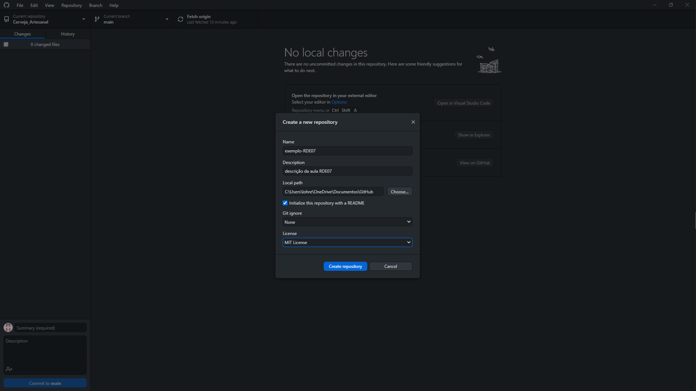
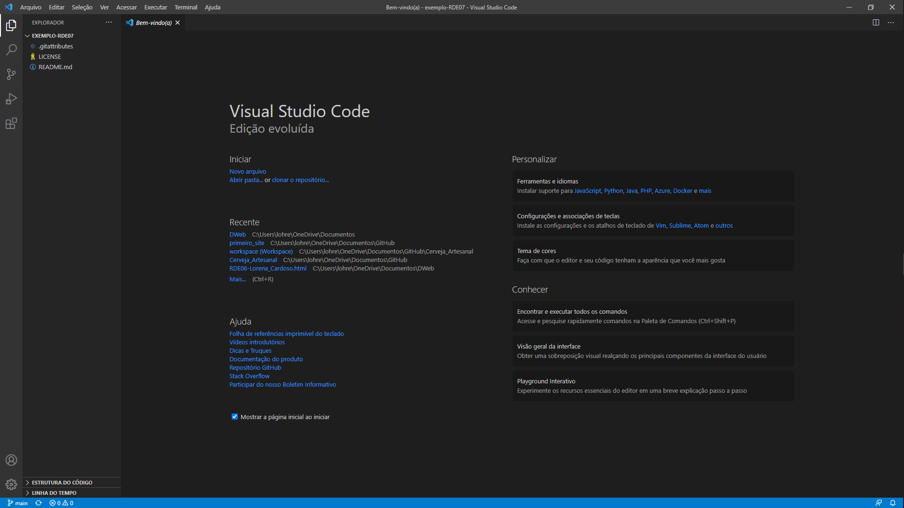
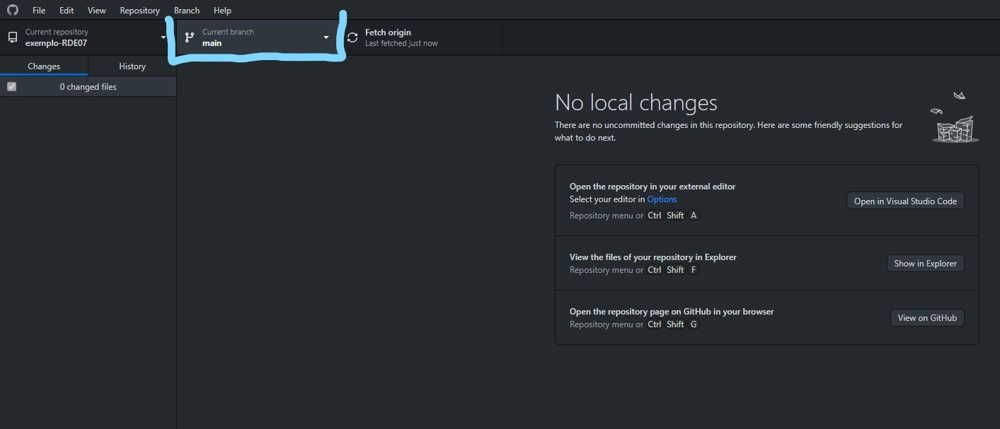
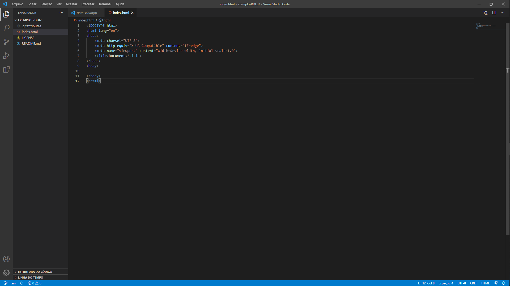

São ramificações de um projeto de software ou documento e tem como objetivo o desenvolvimento paralelo de:
Você pode criar um Branch Secundário tanto do Master/ Main, quanto de um outro Branch Secundario e assim por diante.
No Branch Master/Main toda e qualquer alteração junto com o commit feito nela irá ficar nela.
Ja se for feito em um Branch Secundária ficará apenas nesse Branch, essas alterações não sera feita no Branch Master/Main, onde será preciso um Mager. Segue como ...


Assim você terá finalizado a criação do seu repositório, agora será feito as criações de Branch e como manipular e depois a Hospedagem dele.
Em seu VS Code crie um arquivo HTML nomeado de "index.html" e inicialize com a estrutura do Html, com o DOCTYPE, head e body. Ficando assim:
Em seguida volte ao seu GitHub Desktop e faça um commit dessa alteração e publique no GitHub.com.
Agora perceba que tudo isso foi feito no Branch Master/Main:
Agora se você clicar nessa parte destacada e depois em "New Branch", você estará crianda o Branch Secundário, nomeie da forma como entender e clique em "Create branch"
Não esqeuça de publicar seu branch clicando em "Publish branch"
Em seguida abra ele no Open Visual Code.
Após isso faça algumas alterações no código, como por exemplo, modofique tittle e adicione um h1:
Em seguida vá ao GitHub Desktop, faça um commit e um push!
Depois mude para o main clicando aqui:
Clique para abrir no Visual Studio Code e você verá que as modificaçãoes feitas no Branch secundário não foram feitas no main:
Porém quando você tiver certeza que poderá adicionar o código do Branch Secundário no Branch Main você fará o seguinte:
IMPORTANTE: VOCÊ DEVE ESTAR NO BRANCH MAIN PARA FAZER ESSA JUNÇÃO
Para a hospedagem, você irá no Git Hub e seguirá os seguintes passos: